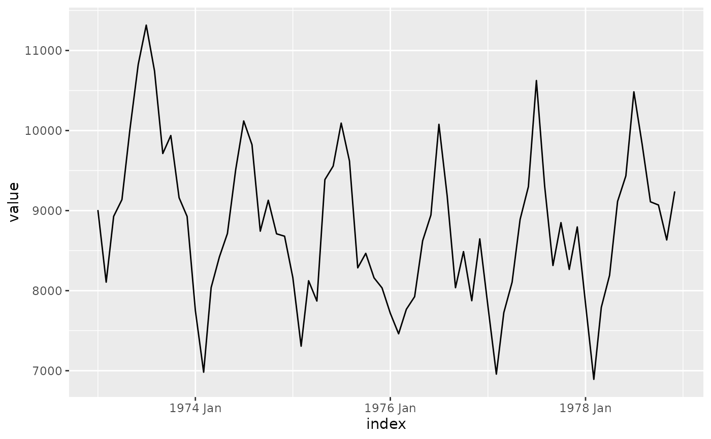
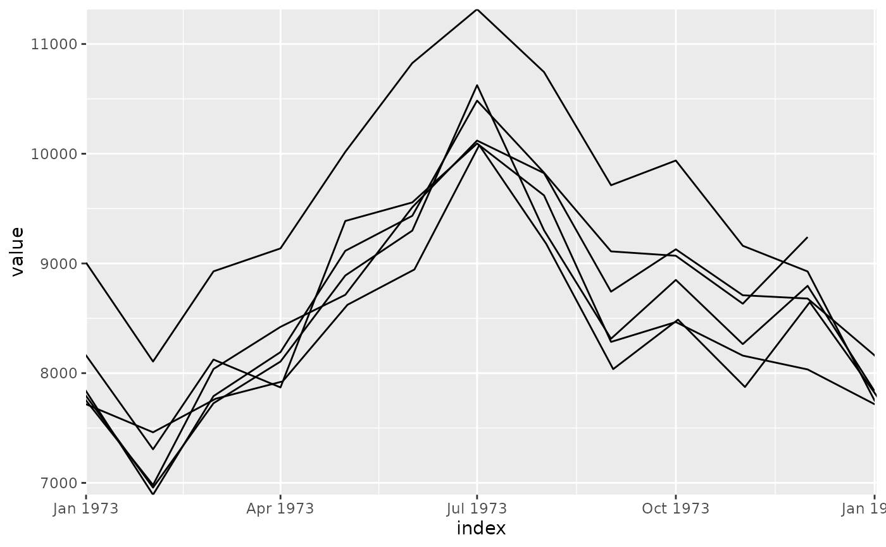

The looped coordinate system loops the cartesian coordinate system around specific loop points. This is particularly useful for visualising seasonal patterns that repeat over calendar periods, since the shape of seasonal patterns can be more easily seen when superimposed on top of each other.
coord_loop(
loops = waiver(),
time_loops = waiver(),
time = "x",
ljust = 0.5,
xlim = NULL,
ylim = NULL,
expand = FALSE,
default = FALSE,
clip = "on",
clip_loops = "on",
coord = coord_cartesian()
)Loop the time scale around a calendrical granularity, one of:
NULL or waiver() for no looping (the default)
A mixtime vector giving time points at which the time axis should loop
A function that takes the limits as input and returns loop points as output
A duration giving the distance between temporal
loops like "2 weeks", or "10 years". If both loops and time_loops are
specified, time_loops wins.
A string specifying which aesthetic contains the time variable that
should be looped over. Default is "x".
Loop justification, a number between 0 and 1 indicating where the lines between looped positions are drawn (0 indicates left, 1 indicates right, 0.5 indicates center).
Limits for the x and y axes. NULL means use the default limits.
Logical indicating whether to expand the coordinate limits.
Default is FALSE.
Logical indicating whether this is the default coordinate system.
Default is FALSE.
Should drawing be clipped to the extent of the plot panel?
A setting of "on" (the default) means yes, and a setting of "off" means no.
Should the drawing of each loop of the timescale be clipped to
the breaks defined by time_loops and ljust?
A setting of "on" (the default) means yes, and a setting of "off" means no.
The underlying coordinate system to use. Default is coord_cartesian().
A Coord ggproto object that can be added to a ggplot.
This coordinate system is particularly useful for visualizing seasonal or cyclic patterns in time series data. It works by:
Dividing the time axis into segments based on the specified loop period
Translating each segment to overlay on the first segment
Creating a visualization where multiple time periods are superimposed
The coordinate system requires R version 4.2.0 or higher due to its use of usage of clipping paths.
The looped coordinate system reveals patterns that repeat over regular time
periods, such as annual seasonality in monthly data, or weekly patterns in
daily data. It allows the [x/y] time aesthetic to be specified
continuously, and loops the time axis around specified time intervals. This
allows time within seasonal periods to be compared directly, and highlights
the shape of seasonal patterns. This is commonly used in time series analysis
to identify the peaks and troughs of seasonal patterns.
A key advantage of time being specified continuously is that the connection
between the end of one seasonal period and the start of the next is
preserved. This is otherwise lost when time is discretised into ordered
factors (e.g. months of the year, or days of week). This allows lines and
other geometries to be drawn across seasonal boundaries, such as a line that
connects December to January when plotting annual seasonality.
The justification parameter ljust controls the side of the panel where
these connections are made, left justificiation (ljust = 0) gives space
for inter-seasonal time on the left of the panel, right justification
(ljust = 1) uses the right side of the panel, and center justification
(ljust = 0.5, the default) uses equal spacing on both ends of the season.
Using factors to represent seasonal periods is common, but prone to errors
and is very limiting. Suppose you want to visualize weekly seasonality in
daily data. You could convert the date into a day of week factor (e.g. with
lubridate::wday(date, label = TRUE)), but this loses information about the
year and week of the observation. In order to correctly draw lines connecting
each day of the week (avoiding sawtooth patterns), you would additionally
need to group by year and week to separately identify each line segment. The
aesthetic mapping for plotting this pattern would look something like:
aes(
x = lubridate::wday(date, label = TRUE),
group = interaction(lubridate::year(date), lubridate::week(date)),
y = value
)These operations are error-prone, cumbersome, and are complicated to update
to show different seasonal patterns. For example, if you wanted to instead
show the annual seasonal pattern, both the x and group aesthetics would
need to be changed (to day of year and year respectively). Any errors in this
process would produce sawtooth patterns or other artifacts in the plot.
Another common error in discretizing time into seasonal factors is
incorrect ordering of the factor levels. For example, if you instead used
strftime(date, "%a") to get the day of week, the levels would be sorted
alphabetically rather than in time order ("Fri", "Mon", "Sat", ...). No-one
wants to Monday to follow Friday!
Discretizing time into seasonal factors also prevents plotting the seasonal
pattern across multiple granularities. For example when visualizing weekly
seasonality across data at daily and hourly frequencies, both day of week
and hour of week are needed. Since these factors have different levels, they
cannot be plotted on the same axis. In contrast, it is possible to plot both
daily and hourly data on the same axis using scale_x_mixtime(), which can
then be looped over weekly periods with coord_loop(time_loops = "1 week").
Another subtle issue of using factors instead of continuous time is that spacing between time points is regularized. For example, when plotting the annual seasonal pattern with months as a factor, each month is given equal width on the x-axis despite the fact that months have different lengths.
library(ggplot2)
library(ggtime)
# Basic usage with US accidental deaths data
uad <- tsibble::as_tsibble(USAccDeaths)
# Requires mixtime, POSIXct, or Date time types
uad$index <- as.Date(uad$index)
p <- ggplot(uad, aes(x = index, y = value)) +
geom_line()
# Original plot
p

# With yearly looping to show seasonal patterns
p + coord_loop(time_loop = "1 year")
